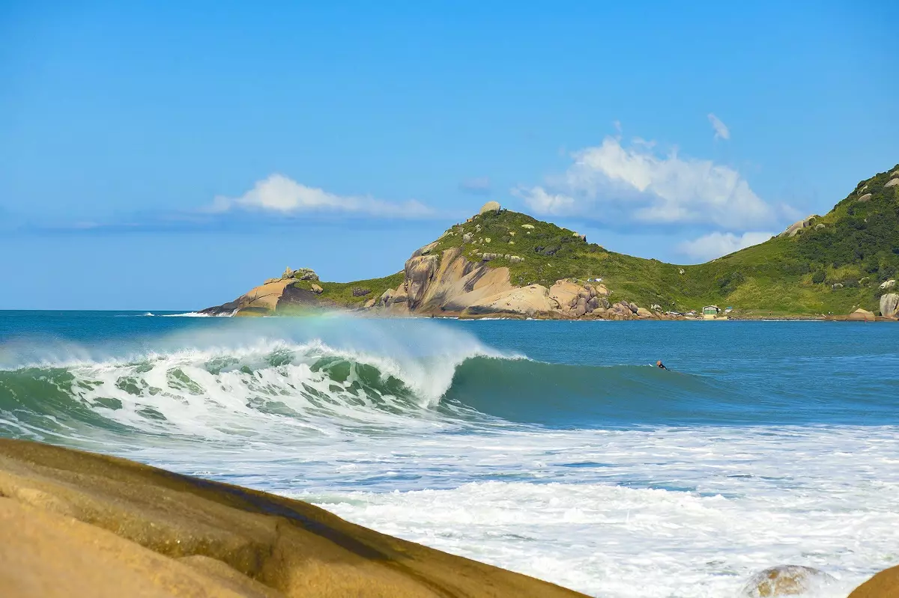
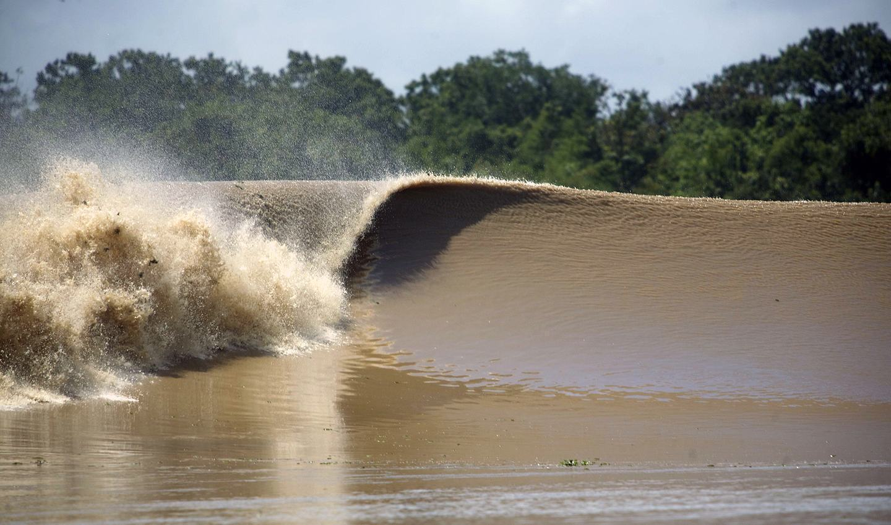
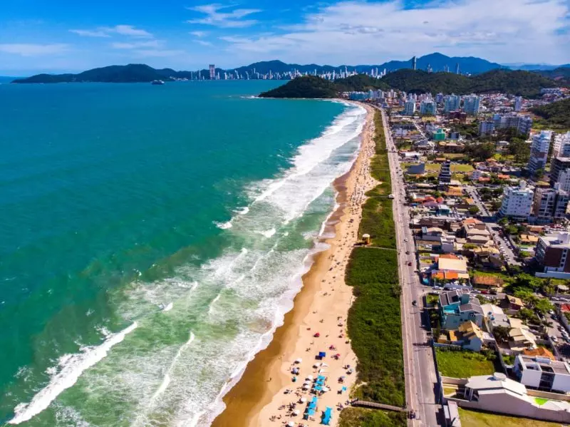

Blog

Etapa Sul-Americana de Surf em Floripa-SC Promete Emoção, com Cobertura Especial!
A etapa SulAmérica de Surf, um dos eventos mais aguardados do ano, chega à bela cidade de Florianópolis neste fim de semana. Com previsão de ondas perfeitas e grandes nomes do surf...

Expedição da Pororoca: Aventura e Beleza Natural
A expedição da Pororoca, um fenômeno natural fascinante, é uma das experiências mais espetaculares para aventureiros e amantes da natureza...

Encontre Jeremy Dias nas Manhãs das Praias de Itajaí e Balneário Camboriú, Santa Catarina
Se você é um amante de surf e esportes aquáticos, talvez já tenha se deparado com o talentoso fotógrafo Jeremy Dia nas praias de Itajaí e Balneário Camboriú. Conhecido por suas imagens espetaculares de surf...